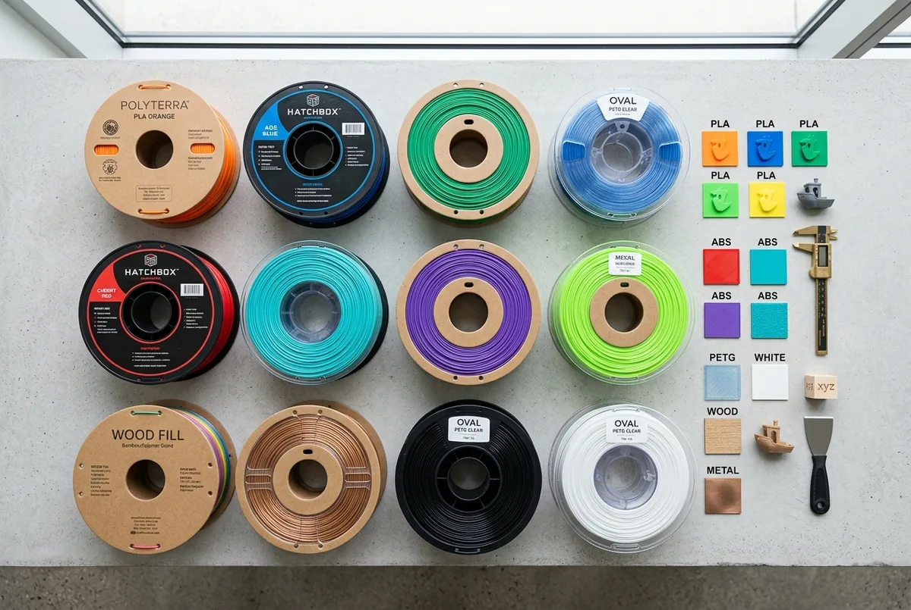
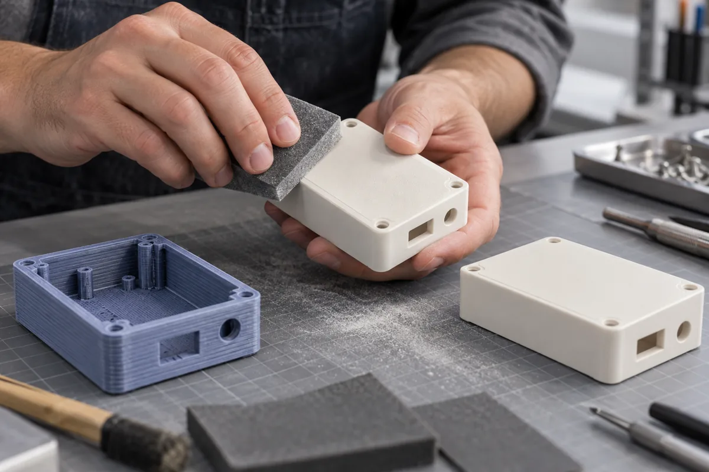
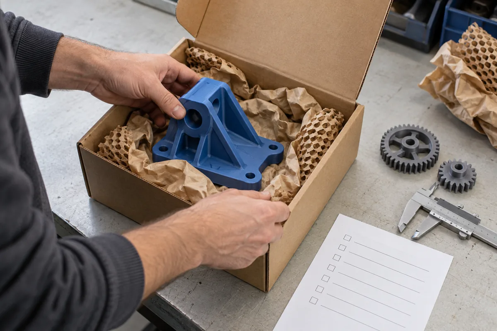

mounting-bracket.stepCAD geometry · millimetres
01 / YOUR DIGITAL STARTING POINT
STEP 01
Upload your design
Start with STL, STEP, OBJ or 3MF. Add your part’s purpose and any dimensions that matter.
Upload Your DesignA clear process, with the right decisions at every stage. Here is what happens between an idea and the object in your hands.
Start with STL, STEP, OBJ or 3MF. Add your part’s purpose and any dimensions that matter.
Upload Your Design
Check wall thickness, geometry, orientation and support requirements with an engineering review.

Balance strength, flexibility, surface finish and budget against the intended use.
Compare Materials
Specify raw, sanded or painted surfaces and how many parts you need. Finish availability depends on the process.
Geometry + material + machine time + finishing
Review before productionConfirm geometry, material, finishing and delivery requirements before approving production.
Estimate a Print
Build the part, remove supports or powder, and apply the agreed finishing steps.

Review dimensions, surface condition and material against the agreed requirements.

Protect delicate features, check the contents and prepare the finished parts for delivery.
Use STL, OBJ, STEP or 3MF. Include units and any critical dimensions. If you only have an idea or drawing, start with design consultation.
FDM is a practical starting point for thermoplastic prototypes. SLA suits smooth, detailed visual models. SLS suits complex nylon geometry. The best choice depends on how the part will be used.
Geometry, material, machine time, supports, finishing and quantity all affect cost. The estimator is illustrative; a manufacturing review is needed for an accurate quote.
Accuracy varies with process, material, size and orientation. Mark critical dimensions and fits in your drawing so they can be reviewed before manufacturing.
Yes. Specify quantity and whether the parts share the same design. For a batch, agree a first-article review and acceptance criteria.
Discuss the intended use before ordering. This site makes no certification, biocompatibility or regulated-use claims. Printed demonstration models are not approved medical devices.
From a single prototype to your next production run.